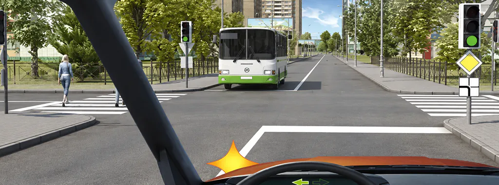
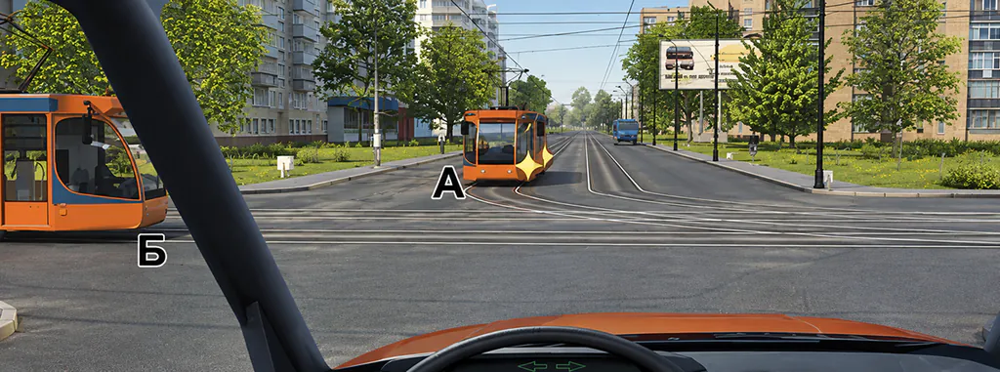
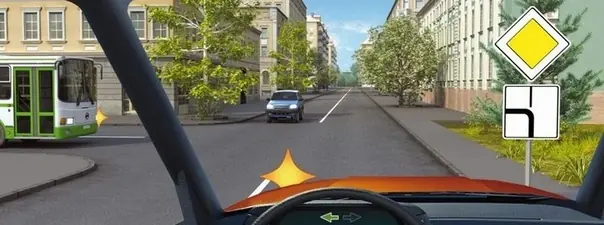

Как решать перекрёстки в билетах ПДД: три задачи по шагам

В задаче о перекрёстке сначала определите, чем регулируется движение, затем сравните положение участников и только потом применяйте правило уступить дорогу. Начинать с «помехи справа» в любой картинке нельзя: работающий светофор, главная дорога и трамвай могут требовать другого шага.
Здесь не пересказан весь раздел 13. Мы последовательно решим три вопроса A/B с разными основаниями приоритета. Полная карта правил есть в руководстве по проезду перекрёстков. Учебные примеры выбраны редакцией и не означают рейтинг сложности по данным экзаменов.
Карточка решения перед ответом
- Моё действие. Прямо, направо, налево или разворот? Вопрос о возможности движения или о том, кому уступить?
- Тип регулирования. Есть ли регулировщик, действующий светофор? Мигающий жёлтый не задаёт очерёдность как обычный разрешающий сигнал.
- Положение дорог. Если перекрёсток нерегулируемый, определите главную и второстепенную по всем условиям, включая табличку направления главной.
- Участники в сравнимых условиях. Кто на главной, кто на второстепенной, есть ли трамвай? Не смешивайте эти группы заранее.
- Действия и обязанности. Примените правило к конкретному манёвру, проверьте пешеходов, велосипедистов и другие условия задачи.
Этот список помогает организовать чтение. Он не разрешает выезд при заторе и не отменяет специальных требований, например об обеспечении беспрепятственного проезда транспорта с предусмотренными ПДД спецсигналами. В каждом билете проверяйте все заданные условия.
Вопрос 1. Знак главной дороги под работающим светофором

Вы намерены повернуть налево. Кому Вы должны уступить дорогу?
- Только пешеходам
- Только автобусу
- Автобусу и пешеходам
Проверить ответ
Верно: Автобусу и пешеходам.
В билете 2, вопросе 13, вы поворачиваете налево. Перед вами зелёный сигнал, рядом знак главной дороги с табличкой. Напротив автобус, на дороге, куда вы поворачиваете, — пешеходы. Первая развилка алгоритма: перекрёсток регулируемый. При определении очерёдности по действующему светофору знаки приоритета не становятся отдельным разрешением проехать раньше встречного транспорта.
Встречный автобус движется прямо. При вашем повороте налево действует пункт 13.4: его нужно пропустить. После этого остаётся обязанность уступить пешеходам, переходящим проезжую часть дороги, на которую вы поворачиваете, по пункту 13.1. Поэтому ответ базы — «Автобусу и пешеходам».
Решающие условия: работающий светофор, ваш левый поворот, встречный автобус прямо, пешеходы на выходе с перекрёстка. Если вы объяснили только автобус, ответ ещё не полный. Если сослались только на знак главной дороги, выбран неподходящий порядок определения приоритета.
Вопрос 2. Трамвай слева не становится обычной «помехой слева»

Вы намерены проехать перекресток в прямом направлении. Кому Вы должны уступить дорогу?
- Обоим трамваям
- Только трамваю А
- Только трамваю Б
- Никому
Проверить ответ
Верно: Обоим трамваям.
В билете 1, вопросе 14, вы намерены ехать прямо. Перекрёсток равнозначных дорог, на нём два трамвая. Для безрельсового автомобиля сначала важен не цвет и не размер трамвая, а его статус в этих условиях: по пункту 13.11 на таком перекрёстке трамвай имеет преимущество перед безрельсовыми транспортными средствами независимо от направления движения.
Поэтому вы уступаете обоим трамваям. Как они определят порядок между собой — отдельный вопрос; положение одного трамвая слева от вас не позволяет исключить его из ответа. Не следует сначала сравнивать каждого участника как обычный легковой автомобиль, а потом вспоминать, что он рельсовый.
Решающие условия: равнозначный перекрёсток и трамваи. Не переносите вывод «трамвай всегда первый» на другие рисунки. Например, положение на второстепенной дороге уже требует другого сравнения. В данной задаче трамваи имеют преимущество именно в показанных равнозначных условиях.
Вопрос 3. Главная дорога меняет направление

Кому Вы обязаны уступить дорогу при повороте налево?
- Только автобусу
- Только легковому автомобилю
- Никому
Проверить ответ
Верно: Никому.
В билете 1, вопросе 15, перед вами знак 2.1 и табличка 8.13: главная дорога поворачивает налево. Автобус подъезжает слева по главной, легковой автомобиль напротив находится на второстепенной. Вы тоже на главной и собираетесь повернуть налево.
Сначала разделите участников. По пункту 13.9 водитель на второстепенной уступает движущимся по главной независимо от их дальнейшего направления. Значит, встречный легковой автомобиль не получает преимущества только потому, что вы поворачиваете налево.
Теперь сравните себя с автобусом: оба на главной, которая меняет направление. Пункт 13.10 отсылает к правилам равнозначных дорог между этой группой участников. Для автобуса вы находитесь справа, поэтому в показанной ситуации вы никому не уступаете. Правильный ответ базы — «Никому».
Решающие условия: не просто ромб, а схема направления главной и положение каждого подъезда. Ошибка «при любом левом повороте пропускаю всех встречных» исчезает, когда вы добавляете условие: по какой дороге движется встречный участник?
Сравните основания, а не номера кнопок
| Пример A/B | Отправная точка | Что изменило решение |
|---|---|---|
| 2–13 | Регулируемый перекрёсток | Левый поворот навстречу автобусу и пешеходам |
| 1–14 | Равнозначные дороги | Преимущество трамваев перед безрельсовым автомобилем |
| 1–15 | Главная меняет направление | Сначала разделение дорог, затем сравнение участников на главной |
У этих вопросов нельзя получить одно общее объяснение «уступи справа». Такой лозунг пропускает первую развилку. Полезная короткая запись после занятия: «светофор — тип дорог — группы участников — манёвр». К каждому слову добавьте условие из конкретной задачи.
Следующее занятие
Откройте тему перекрёстков и перед выбором ответа вслух назовите тип регулирования. Затем объясните, почему участники находятся в равных или разных условиях. Если решение вновь неверное, отметьте конкретный пропущенный признак: сигнал, табличка, трамвай или пешеход. Возвратитесь к исходному примеру после других задач, чтобы проверить самостоятельное рассуждение.
Для отдельного повторения сигналов есть разбор светофора и регулировщика. В PDD Drive выберите A/B или C/D и продолжите в нужной теме. Не переносите номера и ответы A/B в C/D автоматически: сначала проверьте выбранную базу.
Источники и проверка
Откройте тему перекрёстков в своей категории и назовите основание приоритета до выбора ответа.
Частые вопросы
Почему нельзя всегда начинать с помехи справа?
Сначала нужно определить регулирование и приоритет дорог. Правила для равнозначных условий не заменяют сигналы светофора и обязанность уступить движущимся по главной дороге.
Действует ли знак главной дороги при работающем светофоре?
Когда очерёдность движения определяется действующим светофором, водитель руководствуется его сигналами. Знак приоритета не освобождает от обязанностей при левом повороте или перед пешеходами.
Трамвай всегда проезжает первым?
Нет. Нужно учитывать регулирование и положение дорог. В приведённом вопросе 1–14 преимущество обоих трамваев связано с перекрёстком равнозначных дорог.
Если главная дорога поворачивает, кому уступать?
Сначала разделите участников на главной и второстепенной. Между водителями на главной, которая меняет направление, применяются правила равнозначных дорог; аналогично между водителями на второстепенных.